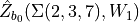

Example 5.4

In this notebook we demonstrate how one may apply a formalism similar to that of the inverted Habiro series also to a knot which is hyperbolic, , by leveraging the isomorphism between plus one surgery on and .
Following equation (5.19), we can compute the  invariant on plus and minus one surgerues on
with Wilson line insertions in the representations
invariant on plus and minus one surgerues on
with Wilson line insertions in the representations  and
and 
[18]:
from pyPlumbing import Plumbing
from sage.combinat.q_analogues import q_pochhammer
q = var('q')
def hab_pos(n):
"""
Return the Laplace transform of the n-th inverted habiro sum for +1 surgery
for even wilson line highest weight insertion.
"""
return (-1)**n*q**(n*(n+1)/2)/q_pochhammer(n, q**(n+1))
def hab_neg(n):
"""
Return the Laplace transform of the n-th inverted habiro sum for -1 surgery
for even wilson line highest weight insertion.
"""
return q**(n*n)/q_pochhammer(n, q**(n+1))
def hyperbolic_factor_even(n,l):
"""
Return the extra factor necessary for the inverted habiro sum on hyperbolic knots
with parameters n and l and even wilson line highest weight insertion.
"""
return q**(l**2-n**2+1) * q_pochhammer(n,q**(n+1)) / q_pochhammer(l,q**(l+1))
def hyperbolic_factor_odd(n,l):
"""
Return the extra factor necessary for the inverted habiro sum on hyperbolic knots
with parameters n and l and odd wilson line highest weight insertion.
"""
return q**(l*(l-1)-n**2+3/2) * q_pochhammer(n,q**(n)) / q_pochhammer(l,q**(l))
def hab_pos_odd(n):
"""
Return the Laplace transform of the n-th inverted habiro sum for +1 surgery
for odd wilson line highest weight insertion.
"""
return (-1)**n*q**(n*(n+1)/2-1/4)/q_pochhammer(n, q**(n))
def hab_neg_odd(n):
"""
Return the Laplace transform of the n-th inverted habiro sum for -1 surgery
for odd wilson line highest weight insertion.
"""
return q**(n**2-n+1/4)/q_pochhammer(n, q**(n))
def habiro_3r(m):
return (-1)**m*q**(-m*(m+3)/2)
def hyperbolic_factor_odd_B(n,l):
return habiro_3r(-n-1) * hab_neg_odd(n) / hab_pos_odd(l)
Without wilson line insertions we have
[19]:
print("Z_0(S^(3)_1(4_1))=",sum(1/q*hab_pos(n)*(hyperbolic_factor_even(n,n)) for n in range(20)).series(q, 20))
print("Z_0(S^(3)_-1(4_1))=",sum(q*hab_neg(n)*(hyperbolic_factor_even(n,n)(q=1/q)) for n in range(20)).series(q, 20))
Z_0(S^(3)_1(4_1))= 1 + (-1)*q + (-1)*q^5 + 1*q^10 + (-1)*q^11 + 1*q^18 + Order(q^20)
Z_0(S^(3)_-1(4_1))= 1 + 1*q + 1*q^3 + 1*q^4 + 1*q^5 + 2*q^7 + 1*q^8 + 2*q^9 + 1*q^10 + 2*q^11 + 1*q^12 + 3*q^13 + 2*q^14 + 3*q^15 + 3*q^16 + 3*q^17 + 2*q^18 + 5*q^19 + Order(q^20)
The first matches  and the second matches the order 7 Ramanujan mock theta function
and the second matches the order 7 Ramanujan mock theta function
[22]:
from pyPlumbing import Plumbing
P = Plumbing.from_Brieskorn([2,3,7])
b0 = P.trivial_spin_c(['A',1])
print("Z(Sigma(2,3,7))=",P.zhat(['A',1],b0,20,wilson=[vector([0])]*5+[vector([0])]))
F0 = sum(q**(n**2)/q_pochhammer(n,q**(n+1)) for n in range(20)).series(q,20)
print("F_0=", F0)
Z(Sigma(2,3,7))= q^(1/2)(4 - 4q^(1) - 4q^(5) + 4q^(10) - 4q^(11) + 4q^(18) + 4q^(30) - 4q^(41) + O(q^42))
F_0= 1 + 1*q + 1*q^3 + 1*q^4 + 1*q^5 + 2*q^7 + 1*q^8 + 2*q^9 + 1*q^10 + 2*q^11 + 1*q^12 + 3*q^13 + 2*q^14 + 3*q^15 + 3*q^16 + 3*q^17 + 2*q^18 + 5*q^19 + Order(q^20)
With wilson line insertions in the representation
[5]:
print("Z_0(S^(3)_1(4_1),W_1)=",(-1 + sum(q**(-1-1/4)*hab_pos_odd(n)*(hyperbolic_factor_odd(n,n)) for n in range(30))).series(q, 20))
print("Z_0(S^(3)_-1(4_1),W_1)=",(-1 + q**(1+1/4)*sum(hab_neg_odd(n)*(hyperbolic_factor_odd(n,n)(q=1/q)) for n in range(20))).series(q, 20))
Z_0(S^(3)_1(4_1),W_1)= (-1) + (-1)*q^2 + (-1)*q^3 + (-1)*q^8 + 1*q^13 + Order(q^20)
Z_0(S^(3)_-1(4_1),W_1)= 1*q + 1*q^2 + 1*q^3 + 2*q^4 + 1*q^5 + 2*q^6 + 2*q^7 + 2*q^8 + 3*q^9 + 3*q^10 + 2*q^11 + 4*q^12 + 4*q^13 + 4*q^14 + 4*q^15 + 6*q^16 + 5*q^17 + 6*q^18 + 6*q^19 + Order(q^20)
The first matches  and the second matches the order 7 Ramanujan mock theta function 
[23]:
print("Z(Sigma(2,3,7),W_1)=",P.zhat(['A',1],b0,20,wilson=[vector([0])]*5+[vector([1])]))
F1 = sum(q**(n**2)/q_pochhammer(n,q**n) for n in range(1,20)).series(q,20)
print("F_1=", F1)
Z(Sigma(2,3,7),W_1)= q^(3/4)(4 - 4q^(2) - 4q^(3) - 4q^(8) + 4q^(13) + 4q^(22) + 4q^(25) + O(q^26))
F_1= 1*q + 1*q^2 + 1*q^3 + 2*q^4 + 1*q^5 + 2*q^6 + 2*q^7 + 2*q^8 + 3*q^9 + 3*q^10 + 2*q^11 + 4*q^12 + 4*q^13 + 4*q^14 + 4*q^15 + 6*q^16 + 5*q^17 + 6*q^18 + 6*q^19 + Order(q^20)
With wilson line insertions in the representation
[41]:
zhat_surg = 0
for n in range(1,10):
zhat_surg += hab_pos(n) * (hyperbolic_factor_even(n,n)) * (q**n + 1 + q**(-n))
zhat_surg += hab_pos(n) * hyperbolic_factor_even(n,n-1)
print("Z_0(S^(3)_1(4_1),W_2)=",(2+1/q+1/q**2*zhat_surg).series(q,20))
zhat_surg = 0
for n in range(1,10):
zhat_surg += hab_neg(n) * (hyperbolic_factor_even(n,n)(q=1/q)) * (q**n + 1 + q**(-n))
zhat_surg += hab_neg(n) * hyperbolic_factor_even(n,n-1)(q=1/q)
print("Z_0(S^(3)_-1(4_1),W_2)=",(1+ q*zhat_surg).series(q,20))
Z_0(S^(3)_1(4_1),W_2)= 1 + (-1)*q + (-1)*q^3 + (-1)*q^5 + 1*q^16 + Order(q^20)
Z_0(S^(3)_-1(4_1),W_2)= 1 + 1*q + 2*q^2 + 1*q^3 + 2*q^4 + 2*q^5 + 3*q^6 + 2*q^7 + 3*q^8 + 3*q^9 + 4*q^10 + 4*q^11 + 5*q^12 + 4*q^13 + 6*q^14 + 5*q^15 + 7*q^16 + 7*q^17 + 8*q^18 + 8*q^19 + Order(q^20)
The first matches and the second matches the order 7 Ramanujan mock theta function
[40]:
print("Z(Sigma(2,3,7),W_2)=",P.zhat(['A',1],b0,20,wilson=[vector([0])]*3+[vector([2])]))
F2 = sum(q**(n**2+n)/q_pochhammer(n+1,q**(n+1)) for n in range(0,20)).series(q,20)
print("F_2=", F2)
Z(Sigma(2,3,7),W_2)= q^(3/2)(1 - 1q^(1) - 1q^(3) - 1q^(5) + 1q^(16) + 1q^(20) + 1q^(26) + 1q^(31) - 1q^(53) - 1q^(60) + O(q^70))
F_2= 1 + 1*q + 2*q^2 + 1*q^3 + 2*q^4 + 2*q^5 + 3*q^6 + 2*q^7 + 3*q^8 + 3*q^9 + 4*q^10 + 4*q^11 + 5*q^12 + 4*q^13 + 6*q^14 + 5*q^15 + 7*q^16 + 7*q^17 + 8*q^18 + 8*q^19 + Order(q^20)
So far, we have just computed the same  -series as in example 5.3.3 using the rewriting of equation 5.19. It is surprising that this computation can be carried forth also with higher surgery. For suregery we have , thus we obtain
-series as in example 5.3.3 using the rewriting of equation 5.19. It is surprising that this computation can be carried forth also with higher surgery. For suregery we have , thus we obtain
[7]:
load('3d_modularity_revisited.sage')
zhat_surg = 0
for n in range(1,6):
P = P_poly(n,2,0)
if not P in ZZ:
P = P(q=1/q)
zhat_surg += P*hab_pos(n)*(hyperbolic_factor_even(n,n))
print("Z_0(S^(3)_2(4_1))=",(1+1/q*zhat_surg).series(q,20))
zhat_surg = 0
for n in range(1,6):
P = P_poly(n,2,0)
zhat_surg += P*hab_neg(n)*(hyperbolic_factor_even(n,n)(q=1/q))
print("Z_0(S^(3)_-2(4_1))=",(zhat_surg).series(q,20))
Z_0(S^(3)_2(4_1))= 1 + (-1)*q + 1*q^12 + (-1)*q^19 + Order(q^20)
Z_0(S^(3)_-2(4_1))= 1 + 1*q + 1*q^2 + 1*q^3 + 3*q^4 + 2*q^5 + 3*q^6 + 3*q^7 + 4*q^8 + 5*q^9 + 7*q^10 + 6*q^11 + 9*q^12 + 9*q^13 + 11*q^14 + 12*q^15 + 16*q^16 + 15*q^17 + 20*q^18 + 21*q^19 + Order(q^20)
The first matches $ \hat{Z}_{b_0}(M:nbsphinx-math:left`(-1;:nbsphinx-math:frac{1}{2}`,:nbsphinx-math:frac{1}{4},:nbsphinx-math:frac{1}{5}\right))$ and the second matches the the first line in table 9 of [2].
[26]:
P = Plumbing.from_Seifert_data([-1,1/2,1/4,1/5])
b0 = P.trivial_spin_c(['A',1])
print("Z(M(-1;1/2,1/4,1/5))=",P.zhat(['A',1],b0,20,wilson=[vector([0])]*3+[vector([0])]))
Z(M(-1;1/2,1/4,1/5))= q^(1/4)(1 - 1q^(1) + 1q^(12) - 1q^(19) + O(q^20))
With a wilson line insertion in the representation with highest weight
[27]:
zhat_surg = 0
for n in range(0,7):
P = P_poly(n,2,0)
if not P in ZZ:
P = P(q=1/q)
zhat_surg += hab_pos_odd(n)*(hyperbolic_factor_odd(n,n))*P
print("Z_0(S^(3)_1(4_1),W_1)=",(1-zhat_surg*q**(-1/4-1)).series(q,20))
zhat_surg = 0
for n in range(0,7):
P = P_poly(n,2,0)
zhat_surg += hab_neg_odd(n)*(hyperbolic_factor_odd(n,n)(q=1/q))*P
print("Z_0(S^(3)_-1(4_1),W_1)=",(1-zhat_surg*q**(1/4+1)).series(q,20))
Z_0(S^(3)_1(4_1),W_1)= 1 + 1*q^2 + (-1)*q^9 + (-1)*q^17 + Order(q^20)
Z_0(S^(3)_-1(4_1),W_1)= (-1)*q + (-2)*q^2 + (-1)*q^3 + (-3)*q^4 + (-3)*q^5 + (-4)*q^6 + (-4)*q^7 + (-6)*q^8 + (-6)*q^9 + (-9)*q^10 + (-8)*q^11 + (-12)*q^12 + (-13)*q^13 + (-16)*q^14 + (-16)*q^15 + (-21)*q^16 + (-23)*q^17 + (-28)*q^18 + (-30)*q^19 + Order(q^20)
The first matches $ \hat{Z}_{b_0}(M:nbsphinx-math:left`(-1;:nbsphinx-math:frac{1}{2}`,:nbsphinx-math:frac{1}{4},:nbsphinx-math:frac{1}{5}\right),W_1)$ and the second matches the the second line in table 9 of [2].
[28]:
P = Plumbing.from_Seifert_data([-1,1/2,1/4,1/5])
print("Z(M(-1;1/2,1/4,1/5))=",P.zhat(['A',1],b0,20,wilson=[vector([0])]*3+[vector([1])]))
Z(M(-1;1/2,1/4,1/5))= q^(1/2)(1 - 1q^(2) + 1q^(9) + 1q^(17) - 1q^(23) - 1q^(35) + 1q^(56) + O(q^57))
With a wilson line insertion in the representation with highest weight
[ ]:
zhat_surg = 0
for n in range(1,7):
P = P_poly(n,2,0)
if not P in ZZ:
P = P(q=1/q)
zhat_surg += P * hab_pos(n) * (hyperbolic_factor_even(n,n)) * (q**n + 1 + q**(-n))
zhat_surg += P * hab_pos(n) * hyperbolic_factor_even(n,n-1)
print("Z_0(S^(3)_1(4_1),W_2)=",(1/q+2+q**(-2)*zhat_surg).series(q,14))
zhat_surg = 0
for n in range(1,7):
P = P_poly(n,2,0)
zhat_surg += P * hab_neg(n) * (hyperbolic_factor_even(n,n)(q=1/q)) * (q**n + 1 + q**(-n))
zhat_surg += P * hab_neg(n) * hyperbolic_factor_even(n,n-1)(q=1/q)
print("Z_0(S^(3)_1(4_-1),W_2)=",(q+q**(2)*zhat_surg).series(q,20))
Z_0(S^(3)_1(4_1),W_2)= 1 + (-1)*q^3 + 1*q^6 + 1*q^13 + Order(q^14)
Z_0(S^(3)_1(4_-1),W_2)= 1*q + 1*q^2 + 2*q^3 + 2*q^4 + 3*q^5 + 3*q^6 + 4*q^7 + 5*q^8 + 7*q^9 + 7*q^10 + 8*q^11 + 10*q^12 + 13*q^13 + 13*q^14 + 17*q^15 + 19*q^16 + 22*q^17 + 25*q^18 + 29*q^19 + Order(q^20)
The first matches $ \hat{Z}_{b_0}(M:nbsphinx-math:left`(-1;:nbsphinx-math:frac{1}{2}`,:nbsphinx-math:frac{1}{4},:nbsphinx-math:frac{1}{5}\right),W_2)$ and the second matches the fourth line in table 9 of [2].
[ ]:
zhat_surg = 0
for n in range(1,7):
P = P_poly(n,2,0)
if not P in ZZ:
P = P(q=1/q)
zhat_surg += P * hab_pos(n) * (hyperbolic_factor_even(n,n)) * (q**n + 1 + q**(-n))
zhat_surg += P * hab_pos(n) * hyperbolic_factor_even(n,n-1)
print("Z_0(S^(3)_1(4_1),W_2)=",(1/q+2+q**(-2)*zhat_surg).series(q,14))
zhat_surg = 0
for n in range(1,7):
P = P_poly(n,2,0)
zhat_surg += P * hab_neg(n) * (hyperbolic_factor_even(n,n)(q=1/q)) * (q**n + 1 + q**(-n))
zhat_surg += P * hab_neg(n) * hyperbolic_factor_even(n,n-1)(q=1/q)
print("Z_0(S^(3)_1(4_-1),W_2)=",(q+q**(2)*zhat_surg).series(q,20))
Z_0(S^(3)_1(4_1),W_2)= 2 + (-1)*q + (-1)*q^3 + 1*q^4 + 1*q^8 + (-1)*q^9 + 1*q^12 + Order(q^14)
Z_0(S^(3)_1(4_-1),W_2)= 1*q + 1*q^2 + 2*q^3 + 1*q^4 + 3*q^5 + 3*q^6 + 4*q^7 + 3*q^8 + 6*q^9 + 7*q^10 + 8*q^11 + 8*q^12 + 10*q^13 + 12*q^14 + 16*q^15 + 16*q^16 + 20*q^17 + 22*q^18 + 24*q^19 + Order(q^20)
[37]:
P = Plumbing.from_Seifert_data([-1,1/2,1/4,1/5])
print("Z(M(-1;1/2,1/4,1/5))=",P.zhat(['A',1],b0,20,wilson=[vector([0])]*2+[vector([1]),vector([2])]))
Z(M(-1;1/2,1/4,1/5))= q^(13/8)(-1 + 1q^(9) + 1q^(12) - 1q^(28) - 1q^(33) + O(q^34))
[ ]:
import numpy as np
m = 4*5
K = [1,4]
p = np.array([2,4,5])
load("weil_rep_fncs.sage")
proj = weil_projector(m,K)
ind = [np.arange(2*m)[p != 0] for p in proj if len(np.arange(2*m)[p != 0]>0)]
signs = [np.sign((p)[ p != 0]) for p in proj if len(np.arange(2*m)[p != 0]>0)]
reps = list()
rep_sgns = list()
for rep,sgn in zip(ind,signs):
if not list(rep) in reps:
reps += [list(rep)]
rep_sgns += [list(sgn)]
th = function('theta', nargs=2)
for rep,rep_sgn in zip(reps,rep_sgns):
print("index = %s" % rep[0])
print("theta_{"+str(rep[0])+"}^{m+K} = %s" % sum(int(s)*th(m,r) for r,s in zip(rep,rep_sgn)))
theta_expansion = 0
for r,s in zip(rep,rep_sgn):
theta_expansion += s*false_theta(m,int(r),50)
print("theta_{"+str(rep[0])+"}^{m+K} = %s" % format_expansion(theta_expansion,50k))
index = 1
theta_{1}^{m+K} = -theta(20, 39) + theta(20, 31) - theta(20, 9) + theta(20, 1)
theta_{1}^{m+K} = 2*q^(1/80)*(1.0 + (-1.0)*q + 1*q^12 + (-1.0)*q^19 + 1*q^21 + (-1.0)*q^30 + Order(q^50))
index = 3
theta_{3}^{m+K} = -theta(20, 37) - theta(20, 27) + theta(20, 13) + theta(20, 3)
theta_{3}^{m+K} = 2*q^(9/80)*(1.0 + 1*q^2 + (-1.0)*q^9 + (-1.0)*q^17 + 1*q^23 + 1*q^35 + Order(q^50))
index = 4
theta_{4}^{m+K} = -theta(20, 36) - theta(20, 24) + theta(20, 16) + theta(20, 4)
theta_{4}^{m+K} = 2*q^(1/5)*(1.0 + 1*q^3 + (-1.0)*q^7 + (-1.0)*q^16 + 1*q^24 + 1*q^39 + Order(q^50))
index = 7
theta_{7}^{m+K} = -theta(20, 33) - theta(20, 23) + theta(20, 17) + theta(20, 7)
theta_{7}^{m+K} = 2*q^(49/80)*(1.0 + 1*q^3 + (-1.0)*q^6 + (-1.0)*q^13 + 1*q^27 + 1*q^40 + (-1.0)*q^49 + Order(q^50))
index = 8
theta_{8}^{m+K} = -theta(20, 32) - theta(20, 28) + theta(20, 12) + theta(20, 8)
theta_{8}^{m+K} = 2*q^(4/5)*(1.0 + 1*q + (-1.0)*q^9 + (-1.0)*q^12 + 1*q^28 + 1*q^33 + Order(q^50))
index = 11
theta_{11}^{m+K} = -theta(20, 29) + theta(20, 21) - theta(20, 19) + theta(20, 11)
theta_{11}^{m+K} = 2*q^(121/80)*(1.0 + (-1.0)*q^3 + 1*q^4 + (-1.0)*q^9 + 1*q^31 + (-1.0)*q^42 + 1*q^45 + Order(q^50))
[91]:
for nu2,nu3 in itertools.product(range(3),range(4)):
print("nu2,nu3", nu2, nu3)
print("Z(M(-2;1/2,1/4,1/5))=",P.zhat(['A',1],b_list[0],20,wilson=[vector([0])]+[vector([0]),vector([nu2]),vector([nu3])]))
nu2,nu3 0 0
Z(M(-2;1/2,1/4,1/5))= q^(7/4)(-1 + 1q^(3) - 1q^(4) + 1q^(9) + O(q^10))
nu2,nu3 0 1
Z(M(-2;1/2,1/4,1/5))= q^(1)(-1 - 1q^(3) + 1q^(6) + 1q^(13) + O(q^14))
nu2,nu3 0 2
Z(M(-2;1/2,1/4,1/5))= q^(3/4)(-1 - 1q^(2) + 1q^(9) + 1q^(17) - 1q^(23) - 1q^(35) + 1q^(56) + 1q^(74) + O(q^75))
nu2,nu3 0 3
Z(M(-2;1/2,1/4,1/5))= q^(1)(-1 - 1q^(1) + 1q^(12) - 1q^(19) + 1q^(21) - 1q^(30) + 1q^(63) + O(q^64))
nu2,nu3 1 0
Z(M(-2;1/2,1/4,1/5))= q^(29/8)(-1 + 1q^(4) + 1q^(13) - 1q^(21) - 1q^(36) + 1q^(48) + O(q^49))
nu2,nu3 1 1
Z(M(-2;1/2,1/4,1/5))= q^(19/8)(-1 + 1q^(8) + 1q^(11) - 1q^(27) - 1q^(32) + 1q^(56) + O(q^57))
nu2,nu3 1 2
Z(M(-2;1/2,1/4,1/5))= q^(13/8)(-1 + 1q^(9) + 1q^(12) - 1q^(28) - 1q^(33) + O(q^34))
nu2,nu3 1 3
Z(M(-2;1/2,1/4,1/5))= q^(11/8)(-1 + 1q^(7) + 1q^(16) - 1q^(24) - 1q^(39) + O(q^40))
nu2,nu3 2 0
Z(M(-2;1/2,1/4,1/5))= q^(9/4)(-1 + 1q^(3) - 1q^(4) + 1q^(9) - 1q^(31) + 1q^(42) - 1q^(45) + 1q^(58) + O(q^59))
nu2,nu3 2 1
Z(M(-2;1/2,1/4,1/5))= q^(3/2)(-1 - 1q^(3) + 1q^(6) + 1q^(13) - 1q^(27) - 1q^(40) + 1q^(49) + 1q^(66) + O(q^67))
nu2,nu3 2 2
Z(M(-2;1/2,1/4,1/5))= q^(5/4)(-1 - 1q^(2) + 1q^(9) + 1q^(17) - 1q^(23) - 1q^(35) + 1q^(56) + 1q^(74) + O(q^75))
nu2,nu3 2 3
Z(M(-2;1/2,1/4,1/5))= q^(3/2)(-1 - 1q^(1) + 1q^(12) - 1q^(19) + 1q^(21) - 1q^(30) + 1q^(63) + O(q^64))
[ ]:
for nu1,nu3 in itertools.product(range(3),range(4)):
print("nu2,nu3", nu2, nu3)
print("Z(M(-2;1/2,1/4,1/5))=",P.zhat(['A',1],b_list[0],20,wilson=[vector([0])]+[vector([0]),vector([nu2]),vector([nu3])]))
nu2,nu3 0 0
Z(M(-2;1/2,1/4,1/5))= q^(1/4)(1 - 1q^(1) + 1q^(12) - 1q^(19) + O(q^20))
nu2,nu3 0 1
Z(M(-2;1/2,1/4,1/5))= q^(1/2)(1 - 1q^(2) + 1q^(9) + 1q^(17) - 1q^(23) - 1q^(35) + 1q^(56) + O(q^57))
nu2,nu3 0 2
Z(M(-2;1/2,1/4,1/5))= q^(5/4)(1 - 1q^(3) + 1q^(6) + 1q^(13) - 1q^(27) - 1q^(40) + 1q^(49) + O(q^50))
nu2,nu3 0 3
Z(M(-2;1/2,1/4,1/5))= q^(5/2)(1 + 1q^(3) - 1q^(4) + 1q^(9) - 1q^(31) + 1q^(42) - 1q^(45) + O(q^46))
nu2,nu3 1 0
Z(M(-2;1/2,1/4,1/5))= q^(29/8)(-1 + 1q^(4) + 1q^(13) - 1q^(21) - 1q^(36) + 1q^(48) + O(q^49))
nu2,nu3 1 1
Z(M(-2;1/2,1/4,1/5))= q^(19/8)(-1 + 1q^(8) + 1q^(11) - 1q^(27) - 1q^(32) + 1q^(56) + O(q^57))
nu2,nu3 1 2
Z(M(-2;1/2,1/4,1/5))= q^(13/8)(-1 + 1q^(9) + 1q^(12) - 1q^(28) - 1q^(33) + O(q^34))
nu2,nu3 1 3
Z(M(-2;1/2,1/4,1/5))= q^(11/8)(-1 + 1q^(7) + 1q^(16) - 1q^(24) - 1q^(39) + O(q^40))
nu2,nu3 2 0
Z(M(-2;1/2,1/4,1/5))= q^(3/4)(-1 + 1q^(1) + 1q^(12) - 1q^(19) + 1q^(21) - 1q^(30) + O(q^31))
nu2,nu3 2 1
Z(M(-2;1/2,1/4,1/5))= q^(1)(-1 + 1q^(2) + 1q^(9) + 1q^(17) - 1q^(23) - 1q^(35) + O(q^36))
nu2,nu3 2 2
Z(M(-2;1/2,1/4,1/5))= q^(7/4)(-1 + 1q^(3) + 1q^(6) + 1q^(13) - 1q^(27) - 1q^(40) + O(q^41))
nu2,nu3 2 3
Z(M(-2;1/2,1/4,1/5))= q^(3)(-1 + 1q^(3) + 1q^(4) + 1q^(9) - 1q^(31) + O(q^32))
[ ]: